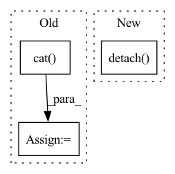

Pattern ID :6663

Before Change
dict: such as {"AUC": 0.83}
concat = torch.cat(batch_matrix_list, dim=0).cpu().numpy()
trues = concat[:, 0]
preds = concat[:, 1]
// get metrics
After Change
true_scores = interaction[self.label_field].to(pred_scores.device)
assert len(true_scores) == len(pred_scores)
return torch.stack((true_scores, pred_scores.detach()), dim=1)
def evaluate(self, batch_matrix_list, *args):
calculate the metrics of all batches
In pattern: SUPERPATTERN
Frequency: 4
Non-data size: 3
Instances
Fragment ID: 22977406
Project Name: rucaibox/recbole
Commit Name: df66b6285fec567d1f3ca0d6ee9d9ceb71f792b6
Time: 2020-10-20
Author: 1337990880@qq.com
File Name: recbole/evaluator/loss_evaluator.py
M Class Name: LossEvaluator
N Class Name: LossEvaluator
M Method Name: collect(3)
N Method Name: collect(2)
M Parent Class: AbstractEvaluator
N Parent Class: AbstractEvaluator
M File Name: recbole/evaluator/loss_evaluator.py
N File Name: recbole/evaluator/loss_evaluator.py
M Start Line: 63
M End Line: 74
N Start Line: 49
N End Line: 51
'>
Before Change
cartoons_construct = d2(faces_decoder)
data_cartoons = torch.cat([cartoons_batch, cartoons_construct.detach()], 0)
label_class = torch.cat([class_cartoons, class_faces], 0)
output = discriminator1(data_cartoons)
loss_disc1 = config.wGan_loss*criterion_bc(output.squeeze(), label_class)
loss_disc1.backward()
After Change
//train discriminator with fake cartoon images
class_faces.fill_(0)
faces_enc1 = e1(faces_batch).detach()
faces_encoder = e_shared(faces_enc1).detach()
faces_decoder = d_shared(faces_encoder).detach()
cartoons_construct = d2(faces_decoder).detach()
output_fake = discriminator1(cartoons_construct)
loss_disc1_fake_cartoons = config.wGan_loss * criterion_bc(output_fake.squeeze(), class_faces)
'>
Fragment ID: 22977436
Project Name: iamigos/avatar-image-generator
Commit Name: 73721f64e9e10027243c50308e052bb19808e72d
Time: 2021-02-22
Author: stevhr@gmail.com
File Name: train.py
M Class Name: AnonimousClass
N Class Name: AnonimousClass
M Method Name: train(8)
N Method Name: train(8)
M Parent Class:
N Parent Class:
M File Name: train.py
N File Name: train.py
M Start Line: 59
M End Line: 147
N Start Line: 59
N End Line: 151
'>
Before Change
outputs = self.model(features)
_, predicted = torch.max(outputs, 1)
all_predictions = torch.cat([all_predictions, predicted])
all_labels = torch.cat([all_labels, labels])
predictions, test_labels = (all_predictions.detach().numpy(), all_labels.detach().numpy())
clf_report = classification_report(y_true=test_labels, y_pred=predictions, output_dict=True)
After Change
predictions = self._prediction_loop(test_features, True)
predictions, test_labels = (
predictions.cpu().detach().numpy(),
test_labels.tensors[0].cpu().detach().numpy(),
)
if predictions.shape[1] > 1:
predictions = np.argmax(predictions, axis=1)
'>
Fragment ID: 22977405
Project Name: knodle/knodle
Commit Name: 7a3e00020cd32bd1e01fb57180c37a036739b7f7
Time: 2021-02-02
Author: alessandro.volpicella@gmail.com
File Name: knodle/trainer/trainer.py
M Class Name: Trainer
N Class Name: Trainer
M Method Name: test(3)
N Method Name: test(3)
M Parent Class: ABC
N Parent Class: ABC
M File Name: knodle/trainer/trainer.py
N File Name: knodle/trainer/trainer.py
M Start Line: 51
M End Line: 67
N Start Line: 59
N End Line: 70
'>
Before Change
r_sp_m = alpha_p * (sp - self.Delta_p)
r_sn_m = alpha_n * (sn - self.Delta_n)
_Z = torch.cat((r_sn_m, r_sp_m), 1)
_Z = _Z * self.gamma
logZ = torch.logsumexp(_Z, dim=1, keepdims=True)
loss = -r_sp_m * self.gamma + logZ
After Change
sn = similarity_matrix[mask]
ap = torch.clamp_min(-sp.detach() + 1 + self.margin, min=0.)
an = torch.clamp_min(sn.detach() + self.margin, min=0.)
delta_p = 1 - self.margin
delta_n = self.margin
'>
Fragment ID: 22977402
Project Name: xialuxi/circleloss_face
Commit Name: 4ec0746af461dac7cbc632b62b0251dd56bc5b56
Time: 2020-05-13
Author: 297509086@qq.com
File Name: CircleLoss.py
M Class Name: SparseCircleLoss
N Class Name: SparseCircleLoss
M Method Name: forward(3)
N Method Name: forward(3)
M Parent Class: nn.Module
N Parent Class: nn.Module
M File Name: CircleLoss.py
N File Name: CircleLoss.py
M Start Line: 36
M End Line: 57
N Start Line: 32
N End Line: 47